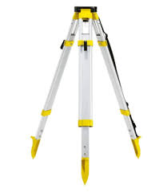
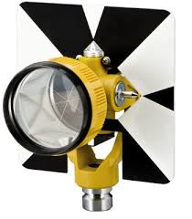

Instrument Used
The following instruments were used for traversing:
- Total Station
- Tripod stand
- Prism Reflector
- Wooden pegs
- Measuring Tape
Total station
A total station is a sophisticated surveying instrument that integrates a theodolite for angle measurement, an electronic distance measurement (EDM) device for distance calculations, and a microprocessor for data processing. It is used to measure horizontal and vertical angles, as well as distances to a reflector or prism, enabling precise calculation of coordinates and spatial data. Total stations are widely used in land surveying, construction, and mapping to ensure accurate alignment and measurement, and they often include features for data recording and processing, making them essential tools for modern surveying and engineering tasks.

Tripod Stand
In surveying, a tripod stand is a crucial support structure that holds and stabilizes surveying instruments, such as total stations, theodolites, and levels. It consists of three adjustable legs, which provide stability and allow for precise positioning and leveling of the instrument. The legs can be extended or retracted to accommodate uneven ground and adjust the height of the instrument. The tripod's head is equipped with a mounting plate or adapter to securely attach the surveying instrument. Proper setup and leveling of the tripod are essential for accurate measurements, as any instability or misalignment can affect the precision of the data collected.
Prism reflector
A prism reflector is an essential component used in conjunction with total stations and laser scanners for precise distance measurements in surveying. It consists of a glass or plastic prism mounted on a reflective surface, often placed on a pole or tripod at the point of interest. When a total station emits a laser beam or signal, the prism reflector reflects it back to the instrument. The total station measures the time it takes for the signal to return, calculating the distance based on this time. Prism reflectors are critical for achieving accurate distance measurements and are commonly used in various surveying applications, including land surveying, construction, and mapping.
Wooden pegs
Wooden pegs are simple, yet essential tools used in surveying and construction to mark specific points or boundaries on the ground. Typically made from sturdy wood, these pegs are driven into the ground to establish reference points, layout lines, or boundary markers. They help in setting out construction sites, aligning structures, and measuring distances. Wooden pegs are often used in conjunction with other surveying equipment like tape measures or levels to ensure accuracy in the placement and alignment of various elements. Their visibility and ease of use make them practical for marking and maintaining precise positions in fieldwork.
Measuring Tapes
Measuring tapes are versatile tools used in surveying, construction, and various other fields to measure distances, lengths, and dimensions. Typically made of flexible metal or fiberglass, a measuring tape consists of a long, retractable strip with measurement markings printed along its length. It is housed in a compact case that allows the tape to extend and retract smoothly. In surveying, measuring tapes are used for measuring shorter distances and for precise alignment tasks. They are often used in conjunction with other surveying instruments to ensure accuracy and consistency in measurements. The flexibility of the tape allows it to measure curved surfaces or uneven ground, making it an essential tool for accurate distance measurement and layout work.